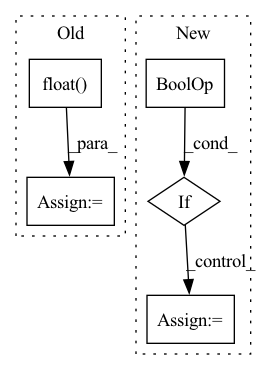

Pattern ID :8411
Before Change
self.knn_t,
)
num = images.size()
top1 = (pred_labels[:, 0] == targets).float() .sum()
return (num, top1)
def validation_epoch_end(self, outputs):After Change
self.knn_k,
self.knn_t,
)
if dist.is_initialized() and dist.get_world_size() > 0 :
// gather predictions and targets from all processes
predicted_labels = torch.cat(dist.gather(predicted_labels), 0)
targets = torch.cat(dist.gather(targets), 0)
self._val_predicted_labels.append(predicted_labels.cpu())
self._val_targets.append(targets.cpu())In pattern: SUPERPATTERN
Frequency: 4
Non-data size: 5
Instances Fragment ID: 29312543
Project Name: lightly-ai/lightly
Commit Name: 000ebaa81361959c8cf9e4075f5c3e393df41a93
Time: 2023-04-12
Author: 43336610+guarin@users.noreply.github.com
File Name: lightly/utils/benchmarking.py
M Class Name: BenchmarkModule
N Class Name: BenchmarkModule
M Method Name: validation_step(3)
N Method Name: validation_step(3)
M Parent Class: LightningModule
N Parent Class: LightningModule
M File Name: lightly/utils/benchmarking.py
N File Name: lightly/utils/benchmarking.py
M Start Line: 197
M End Line: 211
N Start Line: 203
N End Line: 221
Before Change
smplx_verts = projection(smplx_verts, data_dict["calib"]).float()
// get smpl_signs
query_points = projection(data_dict["samples_geo"],
data_dict["calib"]).float()
pts_signs = 2.0 * (check_sign(smplx_verts.unsqueeze(0), smplx_faces,
query_points.unsqueeze(0)).float() -
0.5).squeeze(0)After Change
smplx_verts = projection(smplx_verts, data_dict["calib"]).float()
// get smpl_vis
if "smpl_vis" not in return_dict.keys() and "smpl_vis" in self.feat_keys :
(xy, z) = torch.as_tensor(smplx_verts).to(self.device).split([2, 1], dim=1)
smplx_vis = get_visibility(xy, z, torch.as_tensor(smplx_faces).to(self.device).long())
return_dict["smpl_vis"] = smplx_vis
Fragment ID: 29312604
Project Name: yuliangxiu/icon
Commit Name: 8b39536647d9f3166985fcf23ee9f4a7bb6361b7
Time: 2022-10-11
Author: yuliang.xiu@tuebingen.mpg.de
File Name: lib/dataset/PIFuDataset.py
M Class Name: PIFuDataset
N Class Name: PIFuDataset
M Method Name: load_smpl(3)
N Method Name: load_smpl(3)
M Parent Class:
N Parent Class:
M File Name: lib/dataset/PIFuDataset.py
N File Name: lib/dataset/PIFuDataset.py
M Start Line: 464
M End Line: 501
N Start Line: 414
N End Line: 449
Before Change
try:
param_norm = float(torch.norm(p, norm_type, dtype=torch.float32))
except TypeError as err:
param_norm = float(torch.norm(p.float() , norm_type))
//param_norm = p.data.float().norm(norm_type)
total_norm += param_norm**norm_typeAfter Change
tensor_mp_rank = bwc_tensor_model_parallel_rank(mpu=mpu)
for p in parameters:
// Pipeline parallelism may replicate parameters. Avoid multi-counting.
if hasattr(p, "ds_pipe_replicated") and p.ds_pipe_replicated :
continue
// Filter to avoid over-counting replicated tensors from tensor
// model parallelism
if (tensor_mp_rank > 0) and not is_model_parallel_parameter(p):
continue
param_norm = p.data.float().norm(norm_type)
total_norm += param_norm**norm_type
// Sum across all model parallel GPUs. Fragment ID: 29312571
Project Name: microsoft/deepspeed
Commit Name: e2fdd254edff5780d00c04111572c913ee698719
Time: 2021-09-29
Author: jerasley@microsoft.com
File Name: deepspeed/runtime/utils.py
M Class Name: AnonimousClass
N Class Name: AnonimousClass
M Method Name: get_weight_norm(3)
N Method Name: get_weight_norm(3)
M Parent Class:
N Parent Class:
M File Name: deepspeed/runtime/utils.py
N File Name: deepspeed/runtime/utils.py
M Start Line: 403
M End Line: 437
N Start Line: 500
N End Line: 529
Before Change
def forward(self, audio, audio_len):
if random.random() < 0.2:
audio_mask = (torch.arange(audio.shape[1], device=audio.device)[None, :, None] < audio_len[:, None, None]).float()
x = torch.exp(audio - 1e-6) * audio_mask
y = torch.cat([x[1:], x[:1]])
return torch.log(0.9 * x + 0.1 * y + 1e-6) * audio_mask, audio_len
return audio, audio_len
After Change
def forward(self, audio, audio_len):
assert len(audio.shape) == 3
if self.do_timestretch and random.random() < AUGUMENT_RATE :
audio, audio_len = self.timestretch(audio, audio_len)
if random.random() < AUGUMENT_RATE:
audio = self.pitchshift(audio)
if random.random() < AUGUMENT_RATE: Fragment ID: 29312566
Project Name: kaiidams/voice100
Commit Name: dfe0234fcc858357cb2a91bcba1da06792eabab7
Time: 2021-06-25
Author: katsuya.iida@gmail.com
File Name: voice100/audio.py
M Class Name: BatchSpectrogramAugumentation
N Class Name: BatchSpectrogramAugumentation
M Method Name: forward(3)
N Method Name: forward(3)
M Parent Class: nn.Module
N Parent Class: nn.Module
M File Name: voice100/audio.py
N File Name: voice100/audio.py
M Start Line: 73
M End Line: 78
N Start Line: 80
N End Line: 95